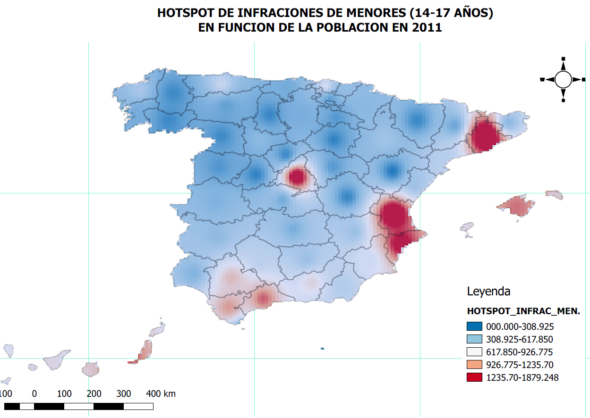
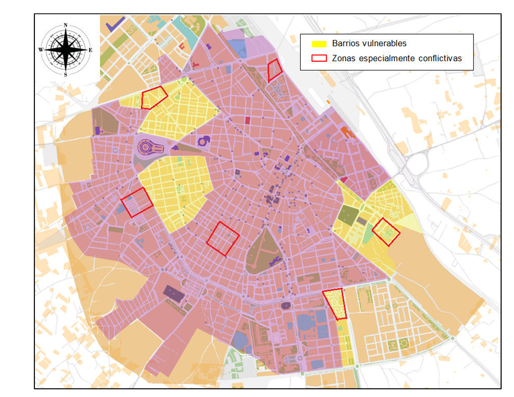
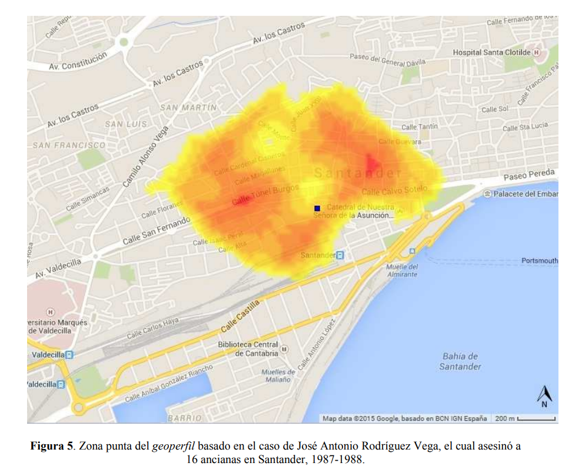
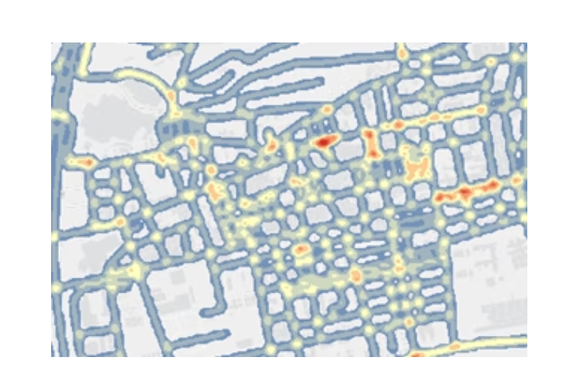
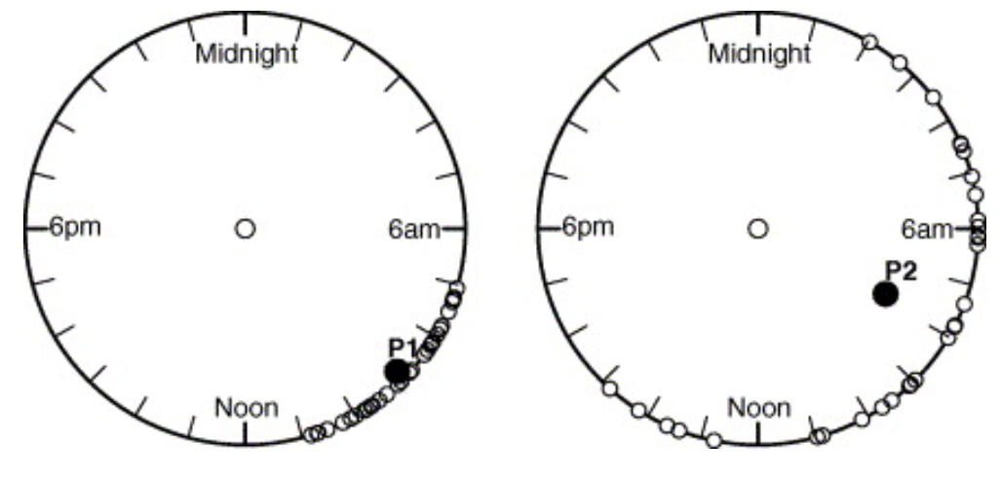

¿Cómo se aplica la cartografía en criminología?
Mapas de criminalidad y hotspots
- Se utilizan mapas de calor o mapas de puntos para identificar zonas con mayor concentración de delitos.
- Permiten conocer dónde y cuándo ocurren los delitos con mayor frecuencia.
Ejemplo: Un mapa que muestra las infracciones de menores de edad en función de la población.

Predicción del delito (Crime Mapping y Predictive Policing)
- Mediante herramientas de análisis geoespacial, se pueden predecir áreas con alta probabilidad de futuros delitos.
- Se combinan datos históricos con factores urbanos como iluminación, accesibilidad y densidad de población.

Análisis de rutas y movilidad del delincuente
- Se estudian las rutas de escape, patrones de desplazamiento y puntos estratégicos usados por criminales.
- Ayuda en la planificación de controles policiales y vigilancia en tiempo real.

Relación del crimen con el entorno urbano
Se analizan factores espaciales que pueden influir en la criminalidad, como:
- Iluminación deficiente.
- Falta de vigilancia o cámaras de seguridad.
- Densidad de población y condiciones socioeconómicas.
Ejemplo: Mapas que muestran la correlación entre barrios con altos índices de pobreza y delitos violentos.

Respuesta y planificación policial
Las fuerzas de seguridad utilizan mapas para organizar patrullajes y asignar recursos de manera eficiente.
- Se pueden programar operativos en función de la geografía del crimen.
Ejemplo: Un mapa que indica zonas donde reforzar la presencia policial en horarios específicos.
